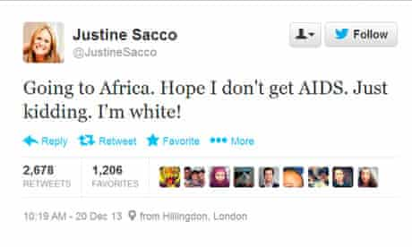

Research with a professor and a PhD student

Team
Song Mi Lee (PhD student)
Advisor
Prof. Clifford Lampe (UMSI)
Duration
August 2019 - May 2020
Role
Researcher
Skills
Literature review, Survey building, Quantitative Analysis, Statistical Analysis
Statistical test used
One-way ANOVA, Welch ANOVA, Factor Analysis, Chi-Square test, Two-way ANOVA, Between-subject factor analysis, Levene's test
Tools
IBM SPSS, Prolific.com, Qualtrics
Clifford Lampe. One of the major topic we dived into was that of online harassment. I was intrigued by this under explored topic and I decided to work on an independent project with Prof. Clifford. Instead of exploring an altogether new project to work on, we decided to work on a study which was already conducted. “When Online Harassment Is Perceived as Justified” was paper published by Lindsay Blackwell, Tianying Chen, Sarita Schoenebeck, and Clifford Lampe. Lindsay’s paper talks about user’s perception of online harassment with the respect to retributive justice. It also explores the role of bystander intervention in reducing online harassment.
In this study we closely look at the role of visual and textual cues to understand its effects on user’s perception of normative behavior, and retributive harassment. In my this article, I will exclusively talk about how visual design plays a role in moderating harassment.
Before we dive into the specifics of this project there are some terms and theories one has to be familiar with.In the Winter of 2019 I took a course of Online Communities with Prof.
How can visual and textual cues help mitigate online harassment?
1.Online Harassment
The definition of online harassment varies from people to people and even circumstances. It includes online settings such as email, social media platforms, messaging apps, blogs, and more. Activities like cyberbullying, DoS attacks, doxing, trolling, swatting, public shaming etc, come under the umbrella of online harassment. Justine Sacco was the victim of public shaming, cyberbullying, and mob-driven harassment.
In December of 2013, Justine Sacco, a PR executive at the IAC, took a plane from New York to Cape Town. Just before boarding Justine tweeted to her 170 Twitter followers,
The definition of online harassment varies from people to people and even circumstances. It includes online settings such as email, social media platforms, messaging apps, blogs, and more. Activities like cyberbullying, DoS attacks, doxing, trolling, swatting, public shaming etc, come under the umbrella of
“Going to Africa. Hope I don’t get AIDS. Just kidding. I’m white!”.
The tweet received extreme backlash from the Twitteratis. By the time she landed in Cape Town, she had lost her job and was the number one trending on Twitter with a #HasJustineLandedYet.
2. Retributive harassment
Lindsay Blackwell defines retributive justice as “It refers to a theory of punishment in which individuals who knowingly commit an act deemed to be morally wrong receive a proportional punishment for their misdeeds, sometimes referred to as an eye for an eye”. Even Kant’s idea of justice revolved around punishing the perpetrators in proportion to their ‘internal wickedness’ and the need for punishment is derived from a ‘universal goal of giving people what they deserve’.
3. Normative Cues
Norms are a way of behaving that are considered normal, standard or typical for that community or institution. Normative cues are the signals that help any external entity understand the norms of that community/institution. Cues are often subtle with some cues being stickier than others — likes, hearts, retweets, karma points, badges, etc. Cues such as flags, likes, dislikes, etc. convey people’s approval and disapproval that stimulate judgment about norms, especially when the norms are not salient.
4. Signaling Theory
Much of that people want to know about each other is not directly observable face-to-face or online. Much like real world, in a online mediated environment people constantly try to observe cues or signals about how they are perceived. Conventional signals are the signals that can be easily faked (eg. Profile name, age, gender, etc.), where as, Assessment signals are hard to fake (eg. Statuses like top contributor, number of likes/dislikes, tags etc). Warranting is a signal or a cue which is coming from a neutral party, and is hard to fake (like assessment signals).
As previously mentioned, this study is inspired from Lindsay Blackwell’s paper on retributive harassment. In order to understand our study, it is necessary to understand Lindsay’s experiment.Figure 1 : Conformity + Bystander condition that was shown in Lindsay’s paper.Lindsay Blackwell’s paper discusses user’s perception of online harassment w.r.t retributive justice. She conducted 2 studies which tested the attitudes of participants about online harassment, effects of social conformity, and bystander intervention. On the contrary to popular belief, her experiment concluded that “people believe online harassment is more deserved and more justified — but not more appropriate — when the target has committed some offense.” Additionally, the experiment also suggested that the bystander intervention (bystander is a person who observes the situation and makes a call to intervene or not) reduces the perception of a harassment being more deserved or justified. Participant were randomly shown offensive post along with a control, a low retributive prime, and high retributive prime. In experiment 2, participants were exposed to the conditions of control, conformity, and conformity + bystander.
As mentioned in the previous overview section, this experiment looks at the role of visual and textual cues to understand its effects on user’s perception of normative behavior, and retributive harassment. During conducting this study, we performed 3 pretest, each one affecting the setup of the next one.
In this overview section I will be briefly talking about all three pretest and their results. For a detailed analysis of each pretest please check the tab section above.
The survey was designed in Qualtrics, and tested using Prolific. This survey was tested on 180 participants. The 6 conditions tested were : P1 — Control (29), P2 —Likes (29), and P3 — Dislike (40), P4 — Reported Control (36), P5 — Reported Harassment (26), and P6 — Reported Count (20).
The design interventions acted as evaluative cues. Example: If a user on the social media is subjected to a harassment post along with a statement that the post has been reported for harassment, in an ideal case scenario, the user will hold back from making a mean or harassing comment to it. This is because a reporting cue acted a an assessment signal for the user. As mentioned before assessment signals are hard to fake, and if the post has been reported for harassment by other community members, it helps the user decide on what is normative in the community.A harassment is bound to have participation for other members, and our conformity(escalating comments) and bystander interventions(de-escalating comments) did the part. We wanted to compare how our design interventions acted infront of conformity and bystander intervention. In an ideal scenario, the values of the Likert scale for de-escalating comments and disapproving design interventions should have been negative ranging mostly into absolutely inappropriate, absolutely unjustified, and absolutely undeserved — as there are more than one disapproving cues present. Similarly, values of the Likert scale for escalating comments and disapproving design interventions should have been in between inappropriate, unjustified and undeserved — as there is a mix of approving and disapproving cues. Unfortunately, the results that we got did not conclusively back our hypothesis.
This led us to re-evaluate our experiment conditions. Participants were subjected to evaluative cues (approval and disapproval), along with conformity and bystander interventions, and a strong prompt of the harassment. Basically, participants were subjected to many cues, with led them to evaluate lot of signals on a single prompt.
Quantitative statistical methods such as Two-way ANOVA, Between subject factor Analysis, and Levene’s test were used to analyze the survey results. The results of Two way ANOVA are statistically significant. As the test was conducted recently, we are still working on analyzing the data. Here is a brief overview of the analysis data we found using a correlation matrix.
As you can see in the above table the means for appropriate vary between absolutely inappropriate to inappropriate on a Likert scale. Similarly, means of deserved variable vary between slightly undeserved to neutral. As you can observe that the means of reported+count prompt are less than the remaining two flagging prompts, which signifies that flagging with count was considered more inappropriate, slightly undeserved, and not justified as compared to other two flagging variables. This showed us that our design interventions were definitely resulting in a reaction from the participants, but the reaction was not enough for a conclusive analysis.
We realized that if given with harassment, participants formed their own opinions on whether the harassment was appropriate, justified, or deserved. With the introduction of our design intervention, we wanted to shift those opinions to inappropriate, undeserved, or unjustified. But if the harassment itself was highly aggressive, we found that these moderating cues were ineffective. This realization opened new avenues for us.
These pretest helped us realize that we were ignoring another factor that was affecting how people perceived harassment — the harassment itself. The harassment prompt of “You’re a f**k**g c**t. Do the world a favor and kill yourself.” was a high aggression harassment.
The survey was designed in Qualtrics and tested using Prolific. This survey was tested on 180 participants. The 6 conditions tested were : P1 — Low Aggression + Control (31), P2 — Low Aggression + Dislikes (38), and P3 — Low Aggression + Reported (27), P4 — High Aggression + Control (33), P5 — Low Aggression + Dislike (28), and P6 — Low Aggression + Reported (24).
To understand how the design intervention of original, dislike and reported affected the user’s perception of harassment I decided to compare the Likert scale means between LAH and HAH variables. Here are some of my findings:
↳ It is surprising to find that the low aggression harassment participants (LAH) found harassment more appropriate, deserved, and justified than the high aggression harassment participants. LAH participants also agreed more with the harassment. This gives us a better idea of how the language of harassment itself can make a difference in the perception of justice.
↳ Similarly, the high aggression participants (HAH) found the post more offensive.
↳ The likeliness of disliking Amy’s post, and adding a comment to the post was higher in the HAH. This could be a result of the post being more aggressive than the LAH. It might very well signify that users tend to intervene if the harassment is aggressive.
↳ Also, the likeliness of calling out Amy as well as calling out Sarah was higher in the HAH prompts which featured dislike and report intervention.
↳ Participants with dislike prompts were more offended by the post as compared to the reported ones. This could mean that their feeling of offense could stem from others disliking the post. It could also be an effect of users perceiving reporting as a system’s intervention.
↳ The likeliness of disliking Amy’s post and calling out Sarah was higher in the dislike prompt as compared to the report.
↳ Participants with the reported prompt found harassment to be more deserved and agreed more with the harassment than the dislike prompt. Also, the likeliness of calling out Amy was higher in the reported as compared to dislike prompt. It could be a result of reporting being a system intervention or reporting being a more serious cue than dislike, which is a cue assessed by the community.
Without a detailed analysis of this experiment is difficult to point out how things play out in the environment of online harassment. The above findings highlight the role level of aggression, and cues play in how harassment is perceived. The current model of moderation involves human moderation and AI moderation which fail to understand the intricacies of human nature. Moderators in social media site (like Facebook) have to go through graphic violence, nudity, and bullying with some of them getting addicted to this content. Similarly, AI moderation does help weed out content that would be potential unsafe but it fails to understand human culture. A popular example of this is Facebook removing the image of Napalm Girl.
More research on this project will help online communities effectively understand how they can change their current policies to serve their community members better. Design interventions have the potential of stopping or curbing harassment at its root. Its based on the approach of “Prevention is better than cure”.
**This is an ongoing research project. I will be updating this article after I analyze more data of Pretest 3.
1.
Ashktorab, Zahra & Vitak, Jessica. (2016). Designing Cyberbullying Mitigation and Prevention Solutions through Participatory Design With Teenagers. 3895-3905. 10.1145/2858036.2858548.
2.
Donath, Judith. (2007). Signals in Social Supernets. J. Computer-Mediated Communication. 13. 231-251. 10.1111/j.1083-6101.2007.00394.x.
3.
Difranzo, Dominic & Taylor, Samuel & Kazerooni, Franccesca & Wherry, Olivia & Bazarova, Natalya. (2018). Upstanding by Design: Bystander Intervention in Cyberbullying. 1-12. 10.1145/3173574.3173785.
4.
DARLEY, JOHN & LATANE, BIBB. (1968). Bystander Intervention in Emergencies: Diffusion of Responsibility. Journal of personality and social psychology. 8. 377-83. 10.1037/h0025589.
5.
DARLEY, JOHN & LATANE, BIBB. (1968). Bystander Intervention in Emergencies: Diffusion of Responsibility. Journal of personality and social psychology. 8. 377-83. 10.1037/h0025589.
6.
Yamamoto, Susan & Maeder, Evelyn. (2019). Creating the Punishment Orientation Questionnaire: An Item Response Theory Approach. Personality and Social Psychology Bulletin. 45. 014616721881848. 10.1177/0146167218818485.
7.
Matias, J. & Johnson, Amy & Boesel, Whitney & Keegan, Brian & Friedman, Jaclyn & DeTar, Charlie. (2015). Reporting, Reviewing, and Responding to Harassment on Twitter.
8.
Carlsmith, Kevin & Darley, John. (2008). Psychological Aspects of Retributive Justice. Advances in Experimental Social Psychology. 40. 193-236. 10.1016/S0065-2601(07)00004-4.
9.
Olson, J.S. & Kellogg, W.A.. (2014). Ways of knowing in HCI. 10.1007/978-1-4939-0378-8.
10.
Creswell, John. (2014). Research design: qualitative, quantitative, and mixed methods approaches.
11.
Matias, J.. (2019). Preventing harassment and increasing group participation through social norms in 2,190 online science discussions. Proceedings of the National Academy of Sciences. 116. 201813486. 10.1073/pnas.1813486116.
12.
Hargittai, Eszter. (2005). An Update on Survey Measures of Web-Oriented Digital Literacy. Social Science Computer Review - SOC SCI COMPUT REV. 23. 371-379. 10.1177/0894439305275911.
Pretest 1 tested design variations over textual variation. The design variations we used were Control, Like, Dislike and Reported. Similarly, textual variations we used comprised of no comments, escalating comments (comments that harassed Sarah) and de-escalating comments (comments that called out Amy and the harassment). This study used a 3x4 factorial, between-subject design; ie. we were testing 12 conditions. Instead of final testing over all 12 conditions we decided to pretest over 3 conditions.
The survey was designed in Qualtrics, and distributed on various social channels such as Reddit (r/SampleSize), Twitter, and Facebook using personal and anonymous connections. 59 random users participated in this survey. The 3 conditions tested were : P1 — Reported + Escalating comments (22), P2 — Like + De-escalating comments (12), and P3 — Dislike + Escalating comments(25).
The participants were shown 1 condition prompt. The survey asked participants:
↳ their perceptions of justice over 4 dependent variable — appropriateness, deservedness, justifiability, and likeliness to participate
↳ an intervention orientation questionnaire which tested their attitudes related to the conditions they were shown. Example: How likely do you think it is that people would harass you if you posted a comment on this thread?
↳ punishment orientation questionnaire tested their orientation towards different form of punishments
↳ Canadian internet usage survey which tested participant’s internet usage and behavior
↳ feature recall which tested the number of design variation that the participant spotted in the prompt
Hypothesis
Hypothesis 1: Exposure to warranting cues such as number of dislikes & reporting decreased the belief that retributive justice is appropriate, deserved or justified.
Hypothesis 2: Exposure to warranting cues such as number of dislikes, & reporting along with conformity (escalating comments) decreases the belief that retributive justice is appropriate, deserved or justified.
Hypothesis 3: Exposure to warranting cues such as number of likes along with conformity (escalating comments) increases the belief that retributive justice is appropriate, deserved or justified.
Hypothesis 4: Exposure to warranting cues such as number of likes along with bystander (de-escalating comments) decreases the belief that retributive justice is appropriate, deserved or justified.
Hypothesis 5: Exposure to warranting cues such as number of dislikes, &reporting along with bystander (de-escalating comments) decreases the belief that retributive justice is appropriate, deserved or justified.
Quantitative statistical methods such as One-way ANOVA, Welch ANOVA, Factor Analysis, and Chi-square test were used to analyze the survey results. Using One-way ANOVA with a p-value of 0.05, no statistically significant results were observed. Additionally, there was a higher standard deviation observed for every evaluative question asked. High standard deviation signaled that the values of participant’s responses were spread out from the mean.
The design interventions acted as evaluative cues. Example: If a user on the social media is subjected to a harassment post along with a statement that the post has been reported for harassment, in an ideal case scenario, the user will hold back from making a mean or harassing comment to it. This is because a reporting cue acted a an assessment signal for the user. As mentioned before assessment signals are hard to fake, and if the post has been reported for harassment by other community members, it helps the user decide on what is normative in the community.
A harassment is bound to have participation for other members, and our conformity(escalating comments) and bystander interventions(de-escalating comments) did the part. We wanted to compare how our design interventions acted in-front of conformity and bystander intervention. In an ideal scenario, the values of the Likert scale for de-escalating comments and disapproving design interventions should have been negative ranging mostly into absolutely inappropriate, absolutely unjustified, and absolutely undeserved — as there are more than one disapproving cues present. Similarly, values of the Likert scale for escalating comments and disapproving design interventions should have been in between inappropriate, unjustified and undeserved — as there is a mix of approving and disapproving cues. Unfortunately, the results that we got did not conclusively back our hypothesis.
This led us to re-evaluate our experiment conditions. Participants were subjected to evaluative cues (approval and disapproval), along with conformity and bystander interventions, and a strong prompt of the harassment. Basically, participants were subjected to many cues, with led them to evaluate lot of signals on a single prompt.
Pretest 1 tested design variations over textual variation. In Pretest-2 we decided to entirely drop textual variations we were testing and focus just on design interventions. The design variations tested for this experiement were Control, Like, Dislike, Reported, Reported Harassment, and Reported Count. This study used a 1x6 factorial, between-subject design; ie. we were testing 6 conditions. The final pretest tested all 6 conditions.
The survey was designed in Qualtrics, and tested using Prolific. This survey was tested on 180 participants. The 6 conditions tested were : P1 — Control (29), P2 —Likes (29), and P3 — Dislike (40), P4 — Reported Control (36), P5 — Reported Harassment (26), and P6 — Reported Count (20).
The participants were shown 1 condition prompt. The survey asked participants:
↳ their perceptions of justice over 3 dependent variable — appropriateness, deservedness, and justifiability
↳ intervention orientation questionnaire which tested their attitudes related to the conditions they were shown. Example: How likely do you think it is that people would harass you if you posted a comment on this thread?
↳ feature recall which tested the number of design variation that the participant spotted in the prompt
Hypothesis
Hypothesis 1: Exposure to warranting cues such as number of dislikes & reporting decreases the belief that retributive justice is appropriate, deserved or justified.
Hypothesis 2: Exposure to warranting cues such as number of likes increases the belief that retributive justice is appropriate, deserved or justified.
Hypothesis 3: Exposure to warranting cues such as the number of flags decreases the belief that retributive justice is appropriate, deserved or justified as compared to just flagged.
Quantitative statistical methods such as One-way ANOVA, Factor Analysis, and Chi-square test were used to analyze the survey results. Using One-way ANOVA with a p-value of 0.05, no statistically significant results were observed.Figure : Descriptive Statistics table of dependent variablesAs you can see in the above table the means for appropriate vary between absolutely inappropriate to inappropriate on a Likert scale. Similarly, means of deserved variable vary between slightly undeserved to neutral. As you can observe that the means of reported+count prompt are less than the remaining two flagging prompts, which signifies that flagging with count was considered more inappropriate, slightly undeserved, and not justified as compared to other two flagging variables. This showed us that our design interventions were definitely resulting in a reaction from the participants, but the reaction was not enough for a conclusive analysis.
Pretest 2 tested effects of design interventions on the perception of harassment. As mentioned in the previous section, we concluded that the harassment prompt we were using was aggressive and was masking the effects of design interventions. We had decided to go with this aggressive prompt since it was the prompt Lindsay used in her study and we wanted to keep our study as close to Lindsay’s study.
For pretest 3 we decided to add an independent variable of low aggression along with the existing harassment prompts. So now our pretest had 2 independent variables of low aggression harassment(LAH) and high aggression harassment(HAH). Our last study also highlighted that there were not many differences between 3 different flagging designs, hence we decided to merge them into just one design for this experiment. Similarly, we dropped our ‘likes’ design intervention since it was similar to our controlled prompt. This left us with three main design interventions to test — control, dislike, and reported. This study used a 2x3 factorial, between-subject design; ie. we tested 6 conditions.
The survey was designed in Qualtrics and tested using Prolific. This survey was tested on 180 participants. The 6 conditions tested were : P1 — Low Aggression + Control (31), P2 — Low Aggression + Dislikes (38), and P3 — Low Aggression + Reported (27), P4 — High Aggression + Control (33), P5 — Low Aggression + Dislike (28), and P6 — Low Aggression + Reported (24).
The participants were shown 1 condition prompt. The survey asked participants:
↳ their general social media behavior and activities.
↳ punishment orientation questionnaire tested their orientation towards a different form of punishments (harsh retributive scale)
↳ intervention orientation questionnaire which tested their attitudes related to the conditions they were shown. Example: How likely do you think it is that people would harass you if you posted a comment on this thread?
↳ feature recall which tested the number of design variation that the participant spotted in the prompt
Quantitative statistical methods such as Two-way ANOVA, Between subject factor Analysis, and Levene’s test were used to analyze the survey results. The results of Two way ANOVA are statistically significant. As the test was conducted recently, we are still working on analyzing the data. Here is a brief overview of the analysis data we found using a correlation matrix.
The correlation matrix helps researchers understand the relationship between two variables. The green blocks are positive significant correlation, and the red blocks are negative significant correlation. The values in the correlation matrix lie between -1 to 1. Extreme values towards -1 or 1 signify a strong correlation. A positive correlation indicates that when the value of one variable increases the value of other variables also tends to increase. Similarly, a negative correlation indicates that when the value of one variable increases, the value of another value tends to decrease. Unfortunately, the correlation matrix cannot exactly pinpoint which variable is affecting the other. Example: In the above diagram the co-efficient value of “How offended are you by this post?” vs “How likely would you be to report Amy’s post for harassment?” is a positive correlation of 0.534 (high correlation). We can infer that as the participants get offended by the post, they are more likely to report the post for harassment. Similarly, we can see that a lot of correlations hold true to the ideal hypothesis.
The original number of prompts were like (181), dislike (66), reported (51), and comments (0). As you can see reported was the most noticed design manipulation with 44/51 users noticing this intervention. This helps us understand that the design intervention of reported was definitely noticed by the users.
To understand how the design intervention of original, dislike and reported affected the user’s perception of harassment I decided to compare the Likert scale means between LAH and HAH variables. Here are some of my findings:
↳ It is surprising to find that the low aggression harassment participants (LAH) found harassment more appropriate, deserved, and justified than the high aggression harassment participants. LAH participants also agreed more with the harassment. This gives us a better idea of how the language of harassment itself can make a difference in the perception of justice.
↳ Similarly, the high aggression participants (HAH) found the post more offensive.
↳ The likeliness of disliking Amy’s post, and adding a comment to the post was higher in the HAH. This could be a result of the post being more aggressive than the LAH. It might very well signify that users tend to intervene if the harassment is aggressive.
↳ Also, the likeliness of calling out Amy as well as calling out Sarah was higher in the HAH prompts which featured dislike and report intervention.
↳ Participants with dislike prompts were more offended by the post as compared to the reported ones. This could mean that their feeling of offense could stem from others disliking the post. It could also be an effect of users perceiving reporting as a system’s intervention.
↳ The likeliness of disliking Amy’s post and calling out Sarah was higher in the dislike prompt as compared to the report.
↳ Participants with the reported prompt found harassment to be more deserved and agreed more with the harassment than the dislike prompt. Also, the likeliness of calling out Amy was higher in the reported as compared to dislike prompt. It could be a result of reporting being a system intervention or reporting being a more serious cue than dislike, which is a cue assessed by the community.